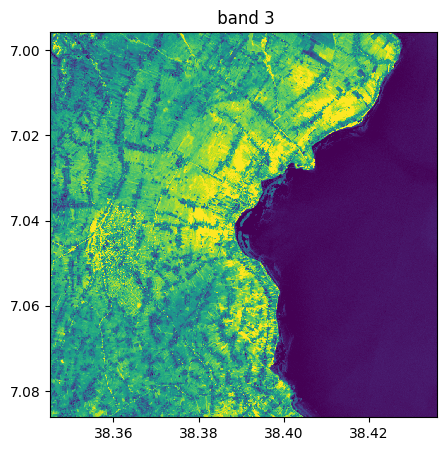
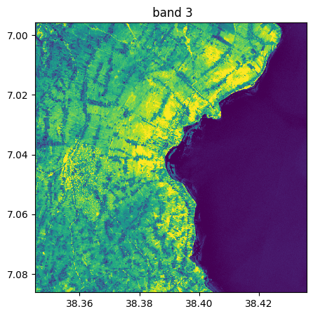
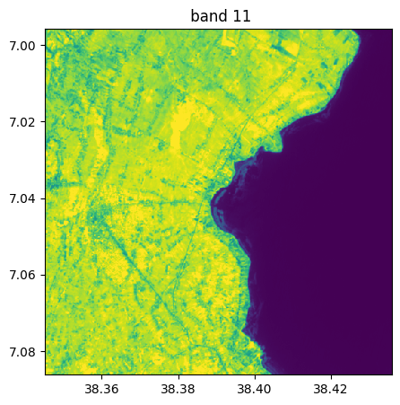
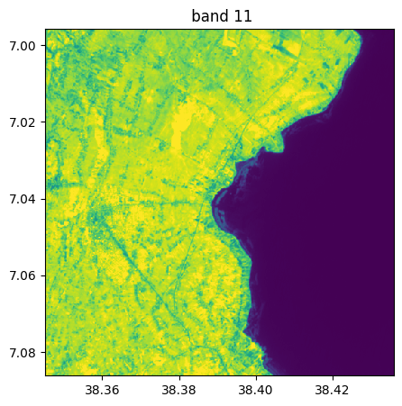

import rastereasy
Read geoimage
In rastereasy, one of the main class to deal with georeferenced images is Geoimage. It contains the main functions (for resampling, reprojection, stack, plotting, …). Let’s start by opening and plotting an image, some bands or making color compositions
Open an image
name_im='./data/demo/sentinel.tif'
image=rastereasy.Geoimage(name_im)
# Alternatively, we can give names to bands
names = {"NIR":8,"G":3,"CO" : 1,"SWIR2":11,"B": 2,"R":4,"RE1":5,"RE2":6,"RE3":7,"WA":9,"SWIR1":10,"SWIR3":12}
image_names=rastereasy.Geoimage(name_im,names=names)
Read some informations
General information
The function ìnfo() gives general informations on the opened image
image.info()
image_names.info()
- Size of the image:
- Rows (height): 1000
- Cols (width): 1000
- Bands: 12
- Spatial resolution: 10.0 meters / degree (depending on projection system)
- Central point latitude - longitude coordinates: (7.04099599, 38.39058840)
- Driver: GTiff
- Data type: int16
- Projection system: EPSG:32637
- Nodata: -32768.0
- Given names for spectral bands:
{'1': 1, '2': 2, '3': 3, '4': 4, '5': 5, '6': 6, '7': 7, '8': 8, '9': 9, '10': 10, '11': 11, '12': 12}
- Size of the image:
- Rows (height): 1000
- Cols (width): 1000
- Bands: 12
- Spatial resolution: 10.0 meters / degree (depending on projection system)
- Central point latitude - longitude coordinates: (7.04099599, 38.39058840)
- Driver: GTiff
- Data type: int16
- Projection system: EPSG:32637
- Nodata: -32768.0
- Given names for spectral bands:
{'CO': 1, 'B': 2, 'G': 3, 'R': 4, 'RE1': 5, 'RE2': 6, 'RE3': 7, 'NIR': 8, 'WA': 9, 'SWIR1': 10, 'SWIR2': 11, 'SWIR3': 12}
The function get_meta() outputs rasterio metadata
image_names.get_meta()
{'driver': 'GTiff',
'dtype': 'int16',
'nodata': -32768.0,
'width': 1000,
'height': 1000,
'count': 12,
'crs': CRS.from_wkt('PROJCS["WGS 84 / UTM zone 37N",GEOGCS["WGS 84",DATUM["WGS_1984",SPHEROID["WGS 84",6378137,298.257223563,AUTHORITY["EPSG","7030"]],AUTHORITY["EPSG","6326"]],PRIMEM["Greenwich",0,AUTHORITY["EPSG","8901"]],UNIT["degree",0.0174532925199433,AUTHORITY["EPSG","9122"]],AUTHORITY["EPSG","4326"]],PROJECTION["Transverse_Mercator"],PARAMETER["latitude_of_origin",0],PARAMETER["central_meridian",39],PARAMETER["scale_factor",0.9996],PARAMETER["false_easting",500000],PARAMETER["false_northing",0],UNIT["metre",1,AUTHORITY["EPSG","9001"]],AXIS["Easting",EAST],AXIS["Northing",NORTH],AUTHORITY["EPSG","32637"]]'),
'transform': Affine(10.0, 0.0, 427690.0,
0.0, -10.0, 783330.0)}
To get some more useful information
print('number of bands = ',image.nb_bands)
print('shape = ',image.shape)
print('spatial resolution = ',image.resolution)
print('lat / lon of central pixel = ',image.get_latlon_coordinates())
number of bands = 12
shape = (1000, 1000)
spatial resolution = 10.0
lat / lon of central pixel = (7.040995989630969, 38.39058840260843)
Values in bands, row, col, min, max, std, mean for all the image, by bands, …
help(image.min)
print('Overall minimum of the image : ',image.min(),'\n')
help(image.max)
print('Maximum of the image for each band: ', image.max(axis = 'band'),'\n')
help(image.std)
print('Standard deviation of the image along the lines: ',image.std(axis = 'row'),'\n')
help(image.mean)
print('Overall mean of the image along the lines: ',image.mean(),'\n')
print('Mean of the image along the bands: ',image.mean(axis='band'),'\n')
Help on method min in module rastereasy.rastereasy:
min(axis=None) method of rastereasy.rastereasy.Geoimage instance
Calculate the minimum value along a specified axis.
Parameters
----------
axis : {'band', 'row', 'col', None}, optional
The axis along which to compute the minimum:
- 'band': Minimum across spectral bands for each pixel
- 'row': Minimum across rows (lines) for each band and column
- 'col': Minimum across columns for each band and row
- None: Global minimum of the entire image
Default is None.
Returns
-------
float or numpy.ndarray
- If axis=None: A single value representing the global minimum
- If axis='band': Array with shape (nb_rows,nb_cols) containing mins along bands
- If axis='row': Array with shape (nb_bands,nb_cols) containing mins along rows
- If axis='col': Array with shape (nb_bands,nb_rows) containing mins along cols
- If axis='pixel': Array with shape (nb_bands) containing mins along all pixels for each band
Raises
------
ValueError
If an invalid axis is specified
Examples
--------
>>> min_value = image.min() # Global minimum value
>>> print(f"Minimum pixel value: {min_value}")
>>>
>>> band_mins = image.min(axis='pixel') # Minimum along all pixels for each band
Overall minimum of the image : 80
Help on method max in module rastereasy.rastereasy:
max(axis=None) method of rastereasy.rastereasy.Geoimage instance
Calculate the maximum value along a specified axis.
Parameters
----------
axis : {'band', 'row', 'col', None}, optional
The axis along which to compute the maximum:
- 'band': Maximum across spectral bands for each pixel
- 'row': Maximum across rows (lines) for each band and column
- 'col': Maximum across columns for each band and row
- None: Global maximum of the entire image
Default is None.
Returns
-------
float or numpy.ndarray
- If axis=None: A single value representing the global maximum
- If axis='band': Array with shape (nb_rows,nb_cols) containing max along bands
- If axis='row': Array with shape (nb_bands,nb_cols) containing max along rows
- If axis='col': Array with shape (nb_bands,nb_rows) containing max along cols
- If axis='pixel': Array with shape (nb_bands) containing maxs along all pixels for each band
Raises
------
ValueError
If an invalid axis is specified
Examples
--------
>>> max_value = image.max() # Global maximum value
>>> print(f"Maximum pixel value: {max_value}")
>>>
>>> band_maxs = image.max(axis='pixel') # Maximum along all pixels for each band
Maximum of the image for each band: [[3714 3715 3865 ... 503 508 506]
[3714 3861 3861 ... 516 516 507]
[3714 3861 3861 ... 524 508 539]
...
[3441 3593 3593 ... 508 504 499]
[3441 3593 3593 ... 500 500 496]
[3522 3606 3606 ... 499 500 506]]
Help on method std in module rastereasy.rastereasy:
std(axis=None) method of rastereasy.rastereasy.Geoimage instance
Calculate the standard deviation along a specified axis.
Parameters
----------
axis : {'band', 'row', 'col', None}, optional
The axis along which to compute the standard deviation:
- 'band': Std dev across spectral bands for each pixel
- 'row': Std dev across rows (lines) for each band and column
- 'col': Std dev across columns for each band and row
- None: Global standard deviation of the entire image
Default is None.
Returns
-------
float or numpy.ndarray
- If axis=None: A single value representing the global std
- If axis='band': Array with shape (nb_rows,nb_cols) containing std along bands
- If axis='row': Array with shape (nb_bands,nb_cols) containing std along rows
- If axis='col': Array with shape (nb_bands,nb_rows) containing std along cols
- If axis='pixel': Array with shape (nb_bands) containing std along all pixels for each band
Raises
------
ValueError
If an invalid axis is specified
Examples
--------
>>> std_value = image.std() # Global standard deviation
>>> print(f"Standard deviation of pixel values: {std_value}")
>>>
>>> band_stds = image.std(axis='pixel') # Standard deviation along all pixels for each band
Notes
-----
The standard deviation is a measure of the amount of variation or dispersion in the values.
A low standard deviation indicates that the values tend to be close to the mean, while a high
standard deviation indicates that the values are spread out over a wider range.
Standard deviation of the image along the lines: [[122.22311882 122.22311882 122.22311882 ... 7.30711982 7.30711982
7.30711982]
[205.73437572 192.49621137 194.23792955 ... 13.7296438 13.4297306
13.11282975]
[208.86176 191.11398642 189.59725968 ... 19.10099516 19.76577962
19.45127245]
...
[261.66746664 261.66746664 261.66746664 ... 14.25447688 14.25447688
14.25447688]
[396.99074316 357.20896262 357.20896262 ... 9.66159775 9.66159775
9.6744897 ]
[592.49497306 551.74175445 551.74175445 ... 8.60866424 8.60866424
8.81168565]]
Help on method mean in module rastereasy.rastereasy:
mean(axis=None) method of rastereasy.rastereasy.Geoimage instance
Calculate the mean value along a specified axis.
Parameters
----------
axis : {'band', 'row', 'col', None}, optional
The axis along which to compute the mean:
- 'band': Mean across spectral bands for each pixel
- 'row': Mean across rows (lines) for each band and column
- 'col': Mean across columns for each band and row
- None: Global mean of the entire image
Default is None.
Returns
-------
float or numpy.ndarray
- If axis=None: A single value representing the global mean
- If axis='band': Array with shape (nb_rows,nb_cols) containing mean along bands
- If axis='row': Array with shape (nb_bands,nb_cols) containing mean along rows
- If axis='col': Array with shape (nb_bands,nb_rows) containing mean along cols
- If axis='pixel': Array with shape (nb_bands) containing mean along all pixels for each band
Raises
------
ValueError
If an invalid axis is specified
Examples
--------
>>> mean_value = image.mean() # Global mean value
>>> print(f"Mean pixel value: {mean_value}")
>>>
>>> band_means = image.mean(axis='pixel') # Mean along all pixels for each band
Notes
-----
This method uses np.nanmean, which ignores NaN values in the calculation.
If you have NaN values as nodata, they won't affect the mean calculation.
Overall mean of the image along the lines: 1487.0592106666666
Mean of the image along the bands: [[1994.66666667 2088.75 2130.83333333 ... 256.16666667
258. 259.83333333]
[1941.33333333 2065.08333333 2100.16666667 ... 259.33333333
262.16666667 260. ]
[1924.08333333 2071.08333333 2095.25 ... 261.
257.66666667 260.25 ]
...
[2116.66666667 2195.58333333 2178.16666667 ... 278.33333333
278.66666667 278.91666667]
[2105.66666667 2169.08333333 2177.33333333 ... 279.33333333
279.25 278.25 ]
[2060.16666667 2133. 2146.41666667 ... 282.75
281.58333333 277.66666667]]
# Extract the 30th line
image[30,:]
array([[ 434, 434, 434, ..., 230, 230, 230],
[ 394, 538, 580, ..., 253, 249, 259],
[ 748, 858, 913, ..., 516, 520, 508],
...,
[3297, 3297, 3297, ..., 198, 198, 198],
[2221, 2630, 2630, ..., 172, 172, 171],
[1237, 1590, 1590, ..., 134, 134, 139]],
shape=(12, 1000), dtype=int16)
# all spectral values in a given pixel
row=20
col=10
print('spectral values in',row,',',col,' : ',image[row,col])
print('size of all spectral values in row',row,':', image[row,:].shape)
print('size of all spectral values in col',col,':', image[:,col].shape)
# check consistency
pixel_row = 15
pixel_col = 22
print('diff with table with values at row ',row,' in pixel col',pixel_col,':', image[row,:][:,pixel_col]-image[row,pixel_col])
print('diff with table with values at col ',col,' in pixel row',pixel_row,':', image[:,col][:,pixel_row]-image[pixel_row,col])
spectral values in 20 , 10 : [ 499 542 869 813 1591 3169 3654 3717 3856 3704 2732 1716]
size of all spectral values in row 20 : (12, 1000)
size of all spectral values in col 10 : (12, 1000)
diff with table with values at row 20 in pixel col 22 : [0 0 0 0 0 0 0 0 0 0 0 0]
diff with table with values at col 10 in pixel row 15 : [0 0 0 0 0 0 0 0 0 0 0 0]
Plot image (colorcomp or bands)
Note on axes (pixel vs latlong)
By default, rastereasy plots images using latitude and longitude coordinates. If you want to plot with pixel coordinates, put the parameter extent = 'pixel'
Color composition via colorcomp function
help(image.colorcomp)
Help on method colorcomp in module rastereasy.rastereasy:
colorcomp(
bands=None,
dest_name='',
percentile=2,
fig_size=(5, 5),
title='',
extent='latlon'
) method of rastereasy.rastereasy.Geoimage instance
Create and display a color composite image from selected bands.
This method creates an RGB color composite by assigning three bands to the red,
green, and blue channels. It's useful for creating false color compositions,
natural color images, or any three-band visualization.
Parameters
----------
bands : list of str, optional
List of three band identifiers to use for the RGB composite (in order: R, G, B).
Can be band names (e.g., ["NIR", "R", "G"]) or indices (e.g., ["4", "3", "2"]).
If None, uses the first three bands in the image.
Default is None.
dest_name : str, optional
Path to save the color composite image. If empty, the image is not saved.
Default is ''.
percentile : int, optional
Percentile value for contrast stretching (e.g., 2 for a 2-98% stretch).
This enhances the visual contrast of the image.
Default is 2.
fig_size : tuple, optional
Size of the figure in inches as (width, height).
Default is DEF_FIG_SIZE.
title : str, optional
Title for the visualization.
Default is ''.
extent : {'latlon', 'pixel', None}, optional
Type of extent to use for the plot:
- 'latlon': Use latitude/longitude coordinates (default)
- 'pixel': Use pixel coordinates
- None: Don't show coordinate axes
Returns
-------
None
This method displays and/or saves the color composite but doesn't return any values.
Raises
------
ValueError
If the image has only 2 bands, which is not enough for an RGB composite.
If an invalid extent value is provided.
Examples
--------
>>> # Create a natural color composite (for Landsat/Sentinel-2 style ordering)
>>> image.colorcomp(bands=["R", "G", "B"])
>>>
>>> # Create a color-infrared composite (vegetation appears red)
>>> image.colorcomp(bands=["NIR", "R", "G"], title="Color-Infrared Composite")
>>>
>>> # Create and save a false color composite
>>> image.colorcomp(bands=["SWIR1", "NIR", "G"], dest_name="false_color.tif")
>>>
>>> # Change the contrast stretch
>>> image.colorcomp(bands=["R", "G", "B"], percentile=5) # More aggressive stretch
Notes
-----
Common band combinations for satellite imagery include:
- Natural color: R, G, B (shows the scene as human eyes would see it)
- Color-infrared: NIR, R, G (vegetation appears red, useful for vegetation analysis)
- Agriculture: SWIR, NIR, B (highlights crop health and soil moisture)
- Urban: SWIR, NIR, R (emphasizes urban areas and bare soil)
# colorcomp with 3 first bands
image.colorcomp()
<Figure size 640x480 with 0 Axes>
image.colorcomp(bands=['4','3','6'],extent = 'pixel')
<Figure size 640x480 with 0 Axes>
image.colorcomp(bands=[8,8,3])
<Figure size 640x480 with 0 Axes>
image_names.colorcomp(bands=["R","G","B"],dest_name='./data/results/colorcomp/S2_colorcomp_R_G_B.tif')
Image saved in ./data/results/colorcomp/S2_colorcomp_R_G_B.tif
<Figure size 640x480 with 0 Axes>

image_names.colorcomp(bands=["R","G","NIR"],dest_name='./data/results/colorcomp/test_colorcomp_R_G_NIR.tif')
Image saved in ./data/results/colorcomp/test_colorcomp_R_G_NIR.tif
<Figure size 640x480 with 0 Axes>
By bands
help(image.visu)
Help on method visu in module rastereasy.rastereasy:
visu(
bands=None,
title='',
percentile=2,
fig_size=(5, 5),
cmap=None,
colorbar=False,
extent='latlon'
) method of rastereasy.rastereasy.Geoimage instance
Visualize one or more bands of the image.
This method provides a flexible way to display individual bands or multiple bands
as separate figures. Unlike colorcomp, which creates RGB composites, this method
displays each band in grayscale or with a specified colormap.
Parameters
----------
bands : str, list of str, or None, optional
The bands to visualize:
- If None: Displays all bands separately
- If a string: Displays a single specified band
- If a list: Displays each specified band separately
Default is None.
title : str, optional
Base title for the visualization. Band names will be appended.
Default is ''.
percentile : int, optional
Percentile value for contrast stretching (e.g., 2 for a 2-98% stretch).
Default is 2.
fig_size : tuple, optional
Size of the figure in inches as (width, height).
Default is DEF_FIG_SIZE.
cmap : str, optional
Matplotlib colormap name to use for display.
Examples: 'viridis', 'plasma', 'gray', 'RdYlGn'
Default is None (uses matplotlib default).
colorbar : bool, optional
Whether to display a colorbar next to each image.
Default is False.
extent : {'latlon', 'pixel', None}, optional
Type of extent to use for the plot:
- 'latlon': Use latitude/longitude coordinates (default)
- 'pixel': Use pixel coordinates
- None: Don't show coordinate axes
Examples
--------
>>> # Visualize all bands
>>> image.visu()
>>>
>>> # Visualize a single band with a colormap and colorbar
>>> image.visu("NIR", cmap='plasma', colorbar=True, title="Near Infrared Band")
>>>
>>> # Visualize selected bands
>>> image.visu(["Red", "NIR", "NDVI"], fig_size=(10, 8))
Notes
-----
This method is useful for:
- Examining individual spectral bands in detail
- Comparing several derived indices side by side
- Applying different colormaps to highlight specific features
- Visualizing single-band thematic data (e.g., elevation, classification results)
image.visu(fig_size=(5,5))
<Figure size 640x480 with 0 Axes>
 

 

image.visu(bands=8)
<Figure size 640x480 with 0 Axes>
image_names.visu(["SWIR1","NIR"])
<Figure size 640x480 with 0 Axes>

Histograms
help(image.hist)
Help on method hist in module rastereasy.rastereasy:
hist(**args) method of rastereasy.rastereasy.Geoimage instance
Display histograms of the image data.
This method provides a flexible way to visualize the distribution of pixel values
in one or more bands of the image. It supports various customization options for
the histogram display.
Parameters
----------
bands : str, int, list, optional
The bands to visualize. If not specified, all bands are included.
This can be band names (e.g., ["NIR", "R", "G"]) or indices (e.g., [4, 3, 2]).
superpose : bool, optional
If True, all histograms are plotted on the same figure. If False (default),
each band gets its own separate histogram figure.
bins : int, optional
The number of bins for computing the histogram. Default is 100.
xmin : float, optional
The minimum value to plot on the x-axis. Values lower than this won't be displayed.
xmax : float, optional
The maximum value to plot on the x-axis. Values higher than this won't be displayed.
title : str, optional
The title for the histogram figure.
histtype : str, optional
The type of histogram to draw. Default is 'stepfilled'.
Other options include 'bar', 'step', 'barstacked', etc.
alpha : float, optional
The transparency of the histogram bars (0.0 to 1.0). Default is 0.6.
fig_size : tuple, optional
The size of the figure in inches as (width, height). Default is DEF_FIG_SIZE.
label : str or list of str, optional
The labels for the histogram. If not provided, default labels will be created.
**args : dict, optional
Additional keyword arguments passed to matplotlib's hist function.
Returns
-------
None
This method displays the histogram(s) but doesn't return any values.
Examples
--------
>>> # Display histograms for all bands
>>> image.hist(bins=100)
>>>
>>> # Display histogram for a single band with customization
>>> image.hist(bands="NIR", bins=150, histtype='stepfilled',
>>> title="NIR Band Distribution", xmin=0, xmax=10000)
>>>
>>> # Superpose histograms from multiple bands
>>> image.hist(bands=["NIR", "R", "G"], bins=100, superpose=True,
>>> alpha=0.7, fig_size=(10, 6))
Notes
-----
This method is based on rasterio's show_hist function and supports most
of matplotlib's histogram customization options. It's useful for understanding
the distribution of values in your image and identifying potential issues like
saturation, quantization, or outliers.
By bands
# Show all bands
image.hist(bins=150,histtype='stepfilled',fig_size=(5,5))
<Figure size 640x480 with 0 Axes>
Superposition of bands
image_names.hist(bins=150,histtype='stepfilled',superpose=True, xmax=4500)
<Figure size 640x480 with 0 Axes>
Show only some bands
Without superposition
image.hist(bands=["2","10"],bins=150,histtype='stepfilled',fig_size=(4,4),xmax=1500)
image.hist(bands=8,bins=150,histtype='stepfilled',label='Example of band')
<Figure size 640x480 with 0 Axes>
<Figure size 640x480 with 0 Axes>
With superposition
image.hist(bands=[8,4],bins=150,histtype='stepfilled',label='Example of band',superpose=True,xmin=0,xmax=4000)
<Figure size 640x480 with 0 Axes>
image_names.hist(bands=["R","G","NIR"],bins=150,histtype='stepfilled',superpose = True,label=["R","band swir","bleu"],xmax=4000)
<Figure size 640x480 with 0 Axes>